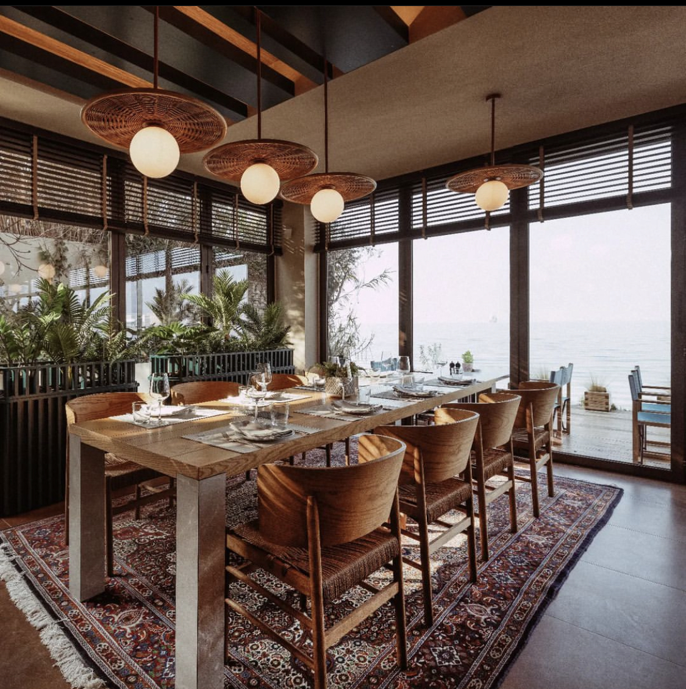
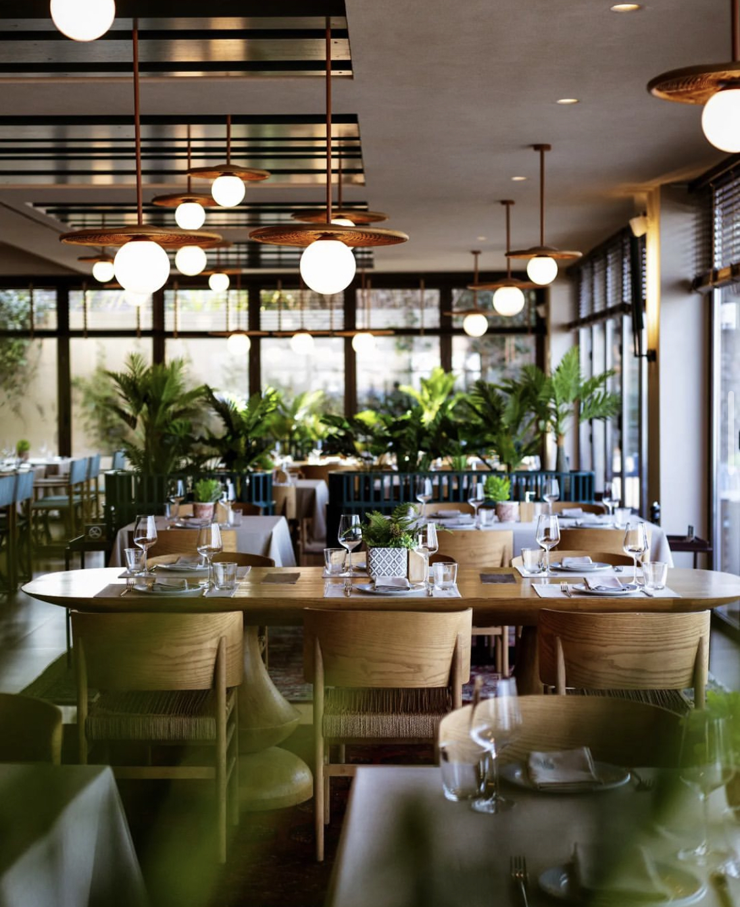
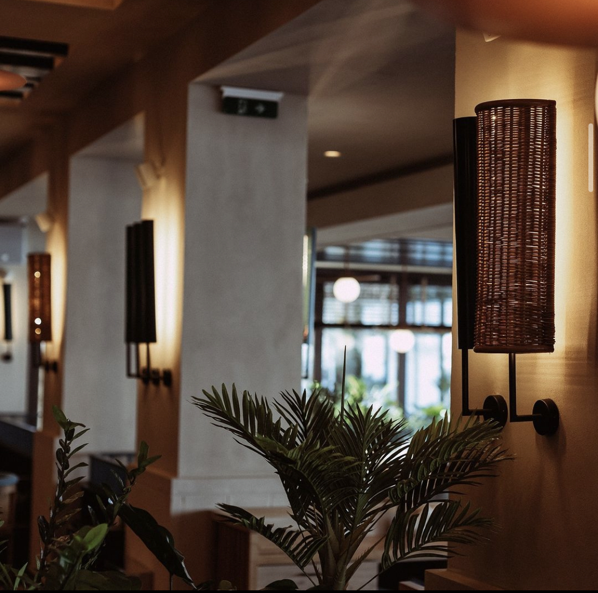
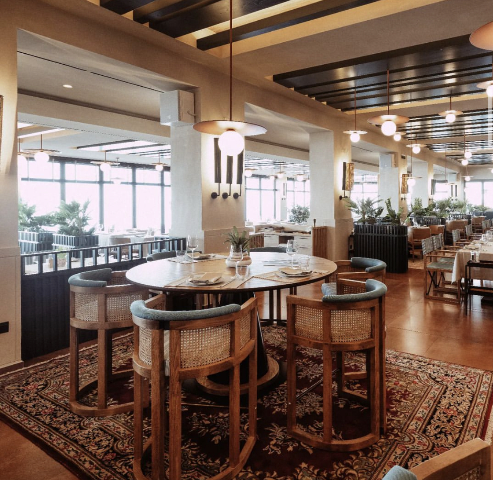

Το εστιατόριό μας







Σούσι στο σπίτι σας
Μία συνταγή για εσάς
- Για το ρύζι
- - Βάζουμε μία κατσαρόλα με νερό να βράζει σε δυνατή φωτιά.
- - Παίρνουμε ένα μεγάλο μπολ με κρύο νερό και τοποθετούμε μέσα ένα σουρωτήρι.
- - Ρίχνουμε μέσα το ρύζι και το ξεπλένουμε πολύ καλά για 2-3 λεπτά ώστε να φύγει όλο το άμυλο. Το νερό πρέπει να γίνει άσπρο.
- - Μεταφέρουμε το ρύζι σε ένα μπολ και προσθέτουμε το ρυζόξιδο, τη ζάχαρη, το νερό, το mirin και τα ανακατεύουμε με ένα κουτάλι ώστε να λιώσει η ζάχαρη.
- - Σκεπάζουμε πολύ καλά με διάφανη μεμβράνη και βάζουμε πάνω στην κατσαρόλα με το νερό που βράζει δημιουργώντας μπεν μαρί. Βράζουμε για 30 λεπτά.
- - Αφαιρούμε το μπολ από το μπεν μαρί και βγάζουμε τη μεμβράνη. Ανακατεύουμε με ένα κουτάλι και αφήνουμε στην άκρη μέχρι να κρυώσει τελείως.
- Για την σύνθεση
- - Ανακατεύουμε λίγο το ρύζι με ένα κουτάλι.
- - Τυλίγουμε το sushi mat (ειδικό σουπλά για να τυλίγουμε το σούσι) με διάφανη μεμβράνη για λόγους υγιεινής.
- - Με αυτά τα υλικά φτιάχνουμε 3 είδη σούσι.
- Για το avocado salmon
- - Στρώνουμε ένα φύκι nori στο sushi mat. Απλώνουμε με τα χέρια μας μία στρώση από το ρύζι ώστε να καλύψουμε όλη την επιφάνεια του αφήνοντας 1 εκ. κενό στη μία πλευρά για να μπορέσουμε να το τυλίξουμε.
- - Κόβουμε το λεπτό κομμάτι του σολομού (το μέρος της κοιλιάς) που είναι πιο λιπαρό, το κόβουμε σε λεπτές λωρίδες 0,5 εκ. και το βάζουμε πάνω στο το ρύζι.
- - Κόβουμε ένα μικρό κομμάτι από το αβοκάντο, αφαιρούμε τη φλούδα και το κόβουμε σε λεπτές λωρίδες 0,5 εκ. Το τοποθετούμε πάνω από τον σολομό.
- - Τυλίγουμε με το ειδικό σουπλά και το πιέζουμε πολύ καλά για να σχηματιστεί το σούσι μας.
- - Βάζουμε στην άκρη του nori λίγο σόγια σως ή νερό για να κολλήσει και να μην ανοίξει.
- - Κόβουμε τις άκρες με ένα πολύ κοφτερό μαχαίρι και στη συνέχεια κόβουμε σε 6 ίσια κομμάτια.
- Για το spicy tuna
- - Στρώνουμε ένα φύκι nori στο sushi mat. Απλώνουμε με τα χέρια μας μία στρώση από το ρύζι ώστε να καλύψουμε όλη την επιφάνεια του αφήνοντας 1 εκ. κενό στη μία πλευρά για να μπορέσουμε να το τυλίξουμε.
- - Πάνω στο ρύζι, κατά μήκος της μεγάλης πλευράς, απλώνουμε ½ κ.γ. wasabi.
- - Κόβουμε ένα μικρό κομμάτι από τον τόνο και το κόβουμε σε λεπτές λωρίδες 0,5 εκ. Τον βάζουμε στη μέση του nori κατά μήκος της μεγάλης πλευράς πάνω από το wasabi.
- - Κόβουμε το 1/3 από το αγγούρι σε λεπτές λωρίδες 1 εκ. και με ένα μαχαίρι κόβουμε το μέρος με τα σπόρια. Το τοποθετούμε πάνω από τον τόνο.
- - Τυλίγουμε και ακολουθούμε την ίδια διαδικασία με τα προηγούμενα.
- Για το california
- - Ανοίγουμε με τα χέρια μας 5-6 κομμάτια από το σουρίμι ώστε να γίνει λεπτές λωρίδες και το βάζουμε σε ένα μπολ. Βάζουμε 1-2 κ.γ. μαγιονέζα και τα ανακατεύουμε με ένα κουτάλι.
- - Στο μπολ με το ρύζι βάζουμε 1 κ.σ. άσπρο σουσάμι, 1 κ.σ. μαύρο σουσάμι και τα ανακατεύουμε.
- - Στρώνουμε ένα φύκι nori στο sushi mat. Απλώνουμε με τα χέρια μας μία στρώση από το ρύζι ώστε να καλύψουμε όλη την επιφάνεια του χωρίς να αφήσουμε κενό.
- - Αναποδογυρίζουμε το nori με το ρύζι ώστε το ρύζι να είναι από κάτω. Όταν το τυλίξουμε, το ρύζι θα είναι στη εξωτερική πλευρά.
- - Τυλίγουμε με την ίδια διαδικασία αλλά με μεγαλύτερη προσοχή γιατί στην εξωτερική πλευρά είναι το ρύζι.
- - Απλώνουμε από πάνω το σουρίμι που περίσσεψε στο μπολ και πασπαλίζουμε με το μαύρο σουσάμι.
- - Σερβίρουμε με wasabi, σόγια σως και τζίντζερ.